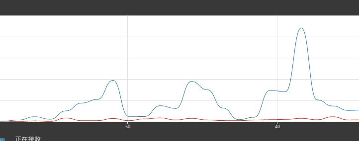
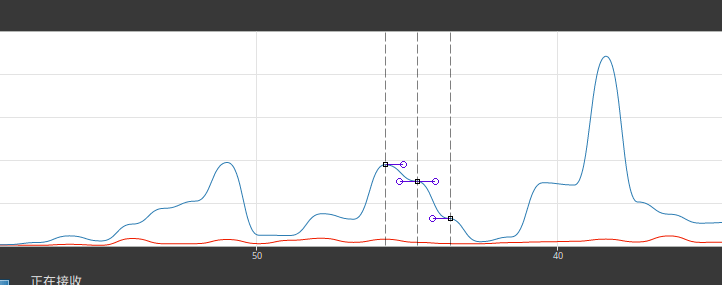

统计图的曲线插值
不会数学还想写图形界面?
很多程序, 比如各种监视器, 需要实时绘制统计图来将数据直观的展示给用户
而这个实时, 却又不是那么的 "实时", 一般表示一秒左右
不然一个监视器吃的资源比被监视程序还多, 就十分微妙了
通常为了偷懒, 直接画几条线把型值点连起来, 做成折线图, 然后一秒一秒的刷新就可以
但人是要有追求的! 我们要平滑! 要曲线!
所以便有了本文, 记录追求上帝所有物的流水帐
对于两个型值点, 要画条线把它们连起来, 就需要求出中间未知的数据
而求出这些数据的过程, 叫做插值 (或者内插, 反正知道有这么个词就行了)
然后如果你知道拟合, 那要明确一下, 插值不是拟合, 与拟合相比插值必须经过所有型值点
线性插值
最简单的插值, 效果就是折线图:
'%3E%3Cpath d='M50,100L150,60L250,120L350,20L450,140L550,110' stroke='rgb(31,119,180)' stroke-width='2'%3E%3C/path%3E%3C/g%3E%3Cg transform='translate(2,2)'%3E%3Ccircle cursor='move' fill='rgb(31,119,180)' stroke='rgb(31,119,180)' cx='50' cy='100' r='3'%3E%3C/circle%3E%3Ccircle cursor='move' fill='rgb(31,119,180)' stroke='rgb(31,119,180)' cx='150' cy='60' r='3'%3E%3C/circle%3E%3Ccircle cursor='move' fill='rgb(31,119,180)' stroke='rgb(31,119,180)' cx='250' cy='120' r='3'%3E%3C/circle%3E%3Ccircle cursor='move' fill='rgb(31,119,180)' stroke='rgb(31,119,180)' cx='350' cy='20' r='3'%3E%3C/circle%3E%3Ccircle cursor='move' fill='rgb(31,119,180)' stroke='rgb(31,119,180)' cx='450' cy='140' r='3'%3E%3C/circle%3E%3Ccircle cursor='move' fill='rgb(31,119,180)' stroke='rgb(31,119,180)' cx='550' cy='110' r='3'%3E%3C/circle%3E%3C/g%3E%3C/svg%3E)
实现也很简单 line to 一下就行
多项式插值
是一个类型的统称, 算法有很多, 但因为复杂度还有龙格现象导致的等距点插值时的过大误差, 这里肯定是不能用的了, 所以就此略过
样条插值
要避免龙格现象, 最通用的方法是使用样条插值, 同样也有很多算法 (还有专门为字体适配的, 各种杂七杂八的算法, 不过这里就画个统计图也用不到)
样条插值的特点是根据分段计算, 计算时只关注相邻的几个型值点, 不需要整条曲线, 自然也就不会因为阶数太高受到龙格现象影响
这里选用 Cardinal Splines, tension 为 0.7:
'%3E%3Cpath d='M50,100Q116.66666666666666,56.666666666666664,150,60C200,65,200,130,250,120S300,15,350,20S400,117.5,450,140Q483.3333333333333,155,550,110' stroke='rgb(31,119,180)' stroke-width='2'%3E%3C/path%3E%3C/g%3E%3Cg transform='translate(2,2)'%3E%3Ccircle cursor='move' fill='rgb(31,119,180)' stroke='rgb(31,119,180)' cx='50' cy='100' r='3'%3E%3C/circle%3E%3Ccircle cursor='move' fill='rgb(31,119,180)' stroke='rgb(31,119,180)' cx='150' cy='60' r='3'%3E%3C/circle%3E%3Ccircle cursor='move' fill='rgb(31,119,180)' stroke='rgb(31,119,180)' cx='250' cy='120' r='3'%3E%3C/circle%3E%3Ccircle cursor='move' fill='rgb(31,119,180)' stroke='rgb(31,119,180)' cx='350' cy='20' r='3'%3E%3C/circle%3E%3Ccircle cursor='move' fill='rgb(31,119,180)' stroke='rgb(31,119,180)' cx='450' cy='140' r='3'%3E%3C/circle%3E%3Ccircle cursor='move' fill='rgb(31,119,180)' stroke='rgb(31,119,180)' cx='550' cy='110' r='3'%3E%3C/circle%3E%3C/g%3E%3C/svg%3E)
关于 Cardinal Splines 的实现可以看: http://www.mvps.org/directx/articles/catmull (这里讲的是 Catmull-Rom, 而 Catmull-Rom 就是 Cardinal 的 tension = 1 或者 Cardinal 去掉 tension)
可以看见上图的效果还是非常棒的, 然而有个问题:
统计图是要实时更新的
也就是说最后一个型值点会随时被添加, 而样条插值所绘制的曲线受相邻点影响
'%3E%3Cpath d='M50,100Q116.66666666666666,56.666666666666664,150,60C200,65,200,130,250,120S300,15,350,20S400,117.5,450,140Q483.3333333333333,155,550,110' stroke='rgb(31,119,180)' stroke-width='2'%3E%3C/path%3E%3Cpath d='M450,140C500,162.5,500,120,550,110' stroke='rgb(44,160,44)' stroke-width='2'%3E%3C/path%3E%3Cpath d='M550,110Q583.3333333333334,103.33333333333333,650,100' stroke='rgb(44,160,44)' stroke-width='2'%3E%3C/path%3E%3C/g%3E%3Cg transform='translate(2,2)'%3E%3Ccircle cursor='move' fill='rgb(31,119,180)' stroke='rgb(31,119,180)' cx='50' cy='100' r='3'%3E%3C/circle%3E%3Ccircle cursor='move' fill='rgb(31,119,180)' stroke='rgb(31,119,180)' cx='150' cy='60' r='3'%3E%3C/circle%3E%3Ccircle cursor='move' fill='rgb(31,119,180)' stroke='rgb(31,119,180)' cx='250' cy='120' r='3'%3E%3C/circle%3E%3Ccircle cursor='move' fill='rgb(31,119,180)' stroke='rgb(31,119,180)' cx='350' cy='20' r='3'%3E%3C/circle%3E%3Ccircle cursor='move' fill='rgb(31,119,180)' stroke='rgb(31,119,180)' cx='450' cy='140' r='3'%3E%3C/circle%3E%3Ccircle cursor='move' fill='rgb(31,119,180)' stroke='rgb(31,119,180)' cx='550' cy='110' r='3'%3E%3C/circle%3E%3Ccircle cursor='move' fill='rgb(31,119,180)' stroke='rgb(31,119,180)' cx='650' cy='100' r='3'%3E%3C/circle%3E%3C/g%3E%3C/svg%3E)
变动的地方用绿色表示, 嗯……要是实时的话, 用户会看见最后一部分曲线不停抽搐……
怎么办呢?
除非能精准的预测下一个值否则无法消除这个抖动, 而这个预测肯定做不到
(陷入沉思)
看看其他程序怎么做的吧, 比如 GNOME 的系统监视器:

等等, 这僵硬的曲线有点眼熟?
来加几个控制点:

就是二次贝塞尔曲线啊!
这段源码也证实了这一点, 简单暴力, 还不用处理边界问题 (
心情复杂
看来写界面是真的不用数学的, 只需要你知道世界上有一条万能的贝塞尔曲线 (